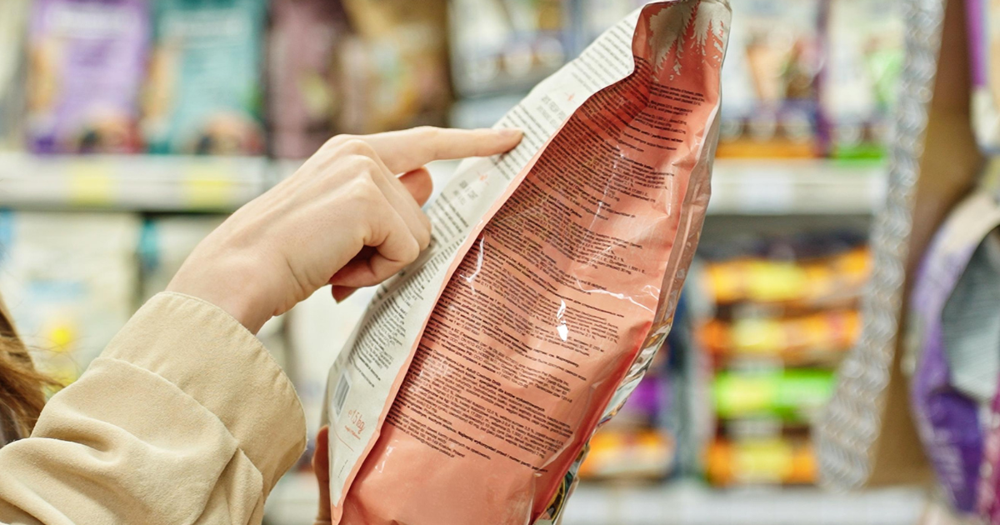

Choosing food for our dogs has never felt more complicated. Today, we have an enormous number of options: kibble, fresh food, raw diets, grain-free recipes, single-protein foods, hypoallergenic diets, weight-management foods — and then all the claims on the front of the package promising support for digestion, skin, joints, immunity, ageing and almost everything in between.
And if you are trying to do the best for your dog, it can feel overwhelming.
There is another layer that we don't always talk about: the guilt. Some caregivers feel guilty for feeding kibble. Others feel they should be feeding raw or fresh food. Some worry about grains, others about carbohydrates. And sometimes, the more we research, the less confident we feel about the food we have chosen.
The more you look into it, the less certain you feel. It's a predictable result of a market that is genuinely complicated, and where the information presented to us is not always easy to interpret.
I know this because I've spent years working in human nutrition watching the exact same pattern: health claims multiplying while ingredient quality quietly declines. When I started working with dogs, I found the same system waiting for me.
We also tend to forget something important: nutrition is a science. It is not a matter of opinion or marketing preference. Nutrient deficiencies or excesses in dogs can lead to poor growth, developmental problems, serious disease, and in some cases, death. The role of a nutritionist — whether working with humans or animals — is to use the science of food to support health, prevent disease, and minimise harm. That is what I try to bring to every conversation I have with a caregiver.
So this article is about the back of the bag. The part most of us skip. Because the front of the package tells us what the company wants us to notice — including that very appealing photo of your favourite breed. The back tells us much more about what we are actually buying.
"Complete" — what it actually means, and what it doesn't
You will almost certainly have seen the word Complete on a pet food label. But what does that word actually commit a manufacturer to?
In the UK, nutritional guidelines for pet food are produced by FEDIAF — the European Pet Food Industry federation. These guidelines set out the nutritional requirements for dogs and cats at different life stages. A food labelled as "complete" is stating that it meets those standards — that it contains everything your dog needs to sustain life and health, in adequate amounts and at appropriate ratios.
That is a meaningful commitment. It tells us something important about nutritional adequacy. But it does not mean that every claim on the front of the package is nutritionally meaningful. And it certainly does not mean that all complete foods are equal in quality.
Think of "complete" as an important starting point — the floor, not the ceiling.
What FEDIAF regulates is which ingredients are permitted and what nutritional targets must be met on paper. What it does not regulate is the quality of those ingredients. And in pet food, quality varies enormously in ways that the label alone cannot always reveal. This is the gap that most marketing is very comfortable operating in.
Five things worth checking before you buy
So if "complete" is the floor, how do we start looking for quality above it? The label won't tell us everything, but it tells us more than most people realise. Here are five things worth checking.
1. Named meats vs. vague terms
Look at the ingredient list on the back of the pack. You want to see specific, named animal proteins — Fresh Chicken, Dehydrated Salmon, Lamb — rather than generic terms like Meat and Animal Derivatives or simply Fish Meal.
The difference matters for several reasons. When a label uses "Meat and Animal Derivatives," the manufacturer is legally permitted to change the animal source from batch to batch without updating the label. You have no way of knowing what protein your dog is actually eating, which is particularly relevant if your dog has a food sensitivity, or if you are trying to identify a dietary trigger.
It also matters for quality. In dog food, animal meals vary considerably in their source, processing method, and digestibility. Terms like "fish meal," "meat meal," or "poultry meal" give no indication of the species, the quality of the raw material, or how well the finished product can actually be used by your dog's body. Named meats — salmon, chicken, beef, duck — commit the manufacturer to a specific source and are generally associated with more consistent, better-regulated supply chains.
The ideal, particularly for protein quality, is to see animal-source proteins as the primary contributors to the food. Animal proteins generally provide a more complete and balanced profile of essential amino acids — the ones dogs cannot produce themselves and must obtain from food — compared to plant-source proteins such as soybean meal, corn gluten meal, or pea protein, which are often used to boost the crude protein figure on the label without providing the same nutritional value.
2. The problem with "look for the first ingredient"
Ingredients are listed in order of weight, but that weight includes moisture. This creates a common source of confusion.
Fresh meat contains a lot of water — typically around 70%. Dried or dehydrated ingredients have had much of that water removed and are therefore far more concentrated. So simply looking at which ingredient appears first does not tell us how much protein, amino acids, or other nutrients that ingredient ultimately contributes to the finished food.
And when you read "freshly prepared chicken" or "fresh chicken" on a label, that can legally include bones and frames, not just muscle meat. This affects both the actual protein content and its digestibility, and it is rarely mentioned on the label.
This is one reason I am cautious when I see advice telling caregivers to simply "look for meat as the first ingredient."
Consider this example:
Freshly Prepared Turkey (33%), Dried Chicken (18.7%), Sweet Potato…
At first glance, you might assume the turkey is contributing more protein than the chicken. But once you account for moisture, the dried chicken — at 18.7% — may actually be providing a greater proportion of protein in the finished food than the fresh turkey at 33%.
A useful rule of thumb: when scanning an ingredient list, try to identify whether the first three to five ingredients include a meaningful source of animal protein. And pay particular attention to whether those protein sources are high-moisture (fresh, freshly prepared) or low-moisture (dried, dehydrated, meal) — because that affects how much protein they are actually contributing.
Here is where looking at the back of the package becomes much more interesting. Let's compare two labels.
Food A
Fresh Salmon (23%), Dehydrated Salmon Proteins (22%), Sweet Potato, Chickpeas, Sunflower Oil, Inactivated Yeasts, Hydrolysed Salmon Protein, Chicory Inulin, Pea Fibre…
Food B
Freshly Prepared Salmon (40%), Sweet Potatoes (13.5%), Potato (11.5%), Whole Peas (8%), Pea Protein, Potato Protein, Fish Stock, Pea Fibre, Minerals, Nutritional Yeast, Botanicals & Herbs* (1%), Salmon Oil, Flaxseed, Prebiotics (MOS 2.6g/kg, FOS 1.5g/kg), Sunflower Oil, Egg, Whole Lentils, Chamomile, Cranberries, Apples, Spinach, Dill (0.05%), Joint Care Mix (Glucosamine 180mg/kg, MSM 180mg/kg, Chondroitin Sulphate 125mg/kg).
Which one is better? It is tempting to choose immediately. Food B has 40% freshly prepared salmon. It also contains a remarkable list of extra botanicals, joint support compounds, cranberry extract, green tea, pomegranate, chamomile, and twelve named herbs. It sounds incredibly impressive.
But Food A pairs its fresh salmon with dehydrated salmon proteins — a low-moisture, concentrated source of protein — plus hydrolysed salmon protein. When you account for moisture, the salmon protein contribution in Food A may be meaningfully higher than it first appears.
Food B, meanwhile, has two plant-based protein sources — pea protein and potato protein — appearing well before the egg, which is the only other animal protein on the list. A food's value to your dog is built on its protein and nutrient foundation, not on a long list of supplements that we still don't have scientific evidence for.
Neither food can be fully evaluated from the label alone. But the label does give us enough to ask better questions — and to be appropriately sceptical of impressive-looking ingredient lists.

Turning the bag over is where the real information begins.
3. Processing — protein, amino acids, and why the basics matter most
Protein is not just one thing. It is made up of amino acids, and dogs require specific essential amino acids that their bodies cannot produce. They must come from food. These amino acids underpin almost every biological process: immune function, tissue repair, enzyme production, hormone regulation, and muscle maintenance.
This matters at every life stage, but it deserves particular attention as dogs age. One of the most significant challenges in senior dogs is the gradual loss of muscle mass — a process that accelerates if protein intake is insufficient or if the protein provided is poorly digestible.
Heat processing at high temperatures can damage heat-sensitive amino acids, which is why some manufacturers use gentler cooking methods. Others supplement amino acids back into the food after processing. What really matters is whether the finished food delivers a complete and digestible amino acid profile.
What I would caution against is placing too much weight on a long list of added supplements as a marker of quality. If the base ingredients are poor, supplementation cannot fully compensate. And many of the supplements commonly added to pet food — particularly those marketed for joint support — do not yet have strong evidence behind them at the doses included in commercial food. A food that invests in quality protein sources is, in most cases, doing more for your dog's long-term health than one that relies on an impressive extras list to signal value.
4. How the company responds when you ask questions
This one doesn't appear on the label at all, but it can tell you more than almost anything else.
One thing I have learned through my own work is that contacting a pet food company can be surprisingly revealing. When I email manufacturers asking for specific nutritional data — calcium and phosphorus ratios, omega fatty acid profiles, digestibility figures — the responses vary considerably. Some companies provide detailed, confident answers. Others respond with variations of "we follow FEDIAF guidelines and cannot share more than that." A few don't respond at all, or now route enquiries through AI tools that provide generic responses without engaging with the actual question.
A company that is genuinely proud of the quality of its ingredients and the rigour of its formulation is usually happy to talk about it. Evasiveness in response to reasonable, specific questions is worth noting and factoring into your decision.
5. Recall history
Before anything else when evaluating a brand, it is worth checking whether it has had products recalled — and if so, how many times and for what reason. Most recalls are precautionary measures, handled quickly and responsibly by manufacturers. But they are also a reminder that food safety should never be taken for granted. A single recall handled with full transparency is very different from a pattern of repeated issues.
The most significant reminder of what is at stake came in 2007, when more than 5,300 cat and dog food products were recalled across North America after vegetable protein ingredients imported from China were found to be adulterated with industrial chemicals. The contaminants — melamine and cyanuric acid — had been added deliberately to make products appear higher in protein than they actually were. Thousands of pets died from sudden kidney failure. Many more survived with permanent, lifelong kidney damage. The exact death toll was never confirmed.
That event was large enough to make international news. But it also revealed something that applies far beyond that specific scandal: we cannot always take for granted that the food in the bag matches what the label describes. This is why knowing where our dogs' food comes from — and being willing to ask questions of manufacturers — are not overcautious behaviours. They are reasonable ones.
In the UK, you can find recall information at ukpetfood.org.
You don't have to become a pet food expert
You don't have to become a pet food expert. And you certainly don't need to feel guilty because someone on the internet told you that you are feeding your dog the wrong food.
What you need is a way to look at the information that is already available to you — on the back of the bag, on the company's website, in how they respond to a direct question — and to read it with a little more confidence.
Because choosing food isn't about finding the product with the most impressive marketing. It is about finding an appropriate food for your dog, your circumstances and your budget. The front of the package is rarely the place to find that information. The back is a better place to start.
A note on where I come in
If any of this has left you wondering whether the food you're currently using is actually right for your dog — that's a reasonable question to sit with.
I work with caregivers who are trying to get this right: those supporting a dog with a health condition, navigating a new diagnosis, managing a senior dog's changing needs, or simply no longer confident in their current food choice and not sure where to start.
The work I do goes beyond labels. It includes dry matter conversions, nutrient ratio analysis, direct correspondence with manufacturers, and matching food choices to an individual dog's life stage, health status and the realities of the caregiver's life.
If that sounds like what you need, you're welcome to start with a free discovery call — a short, no-pressure conversation where we can talk about your dog and whether working together makes sense.
Book your free discovery call →